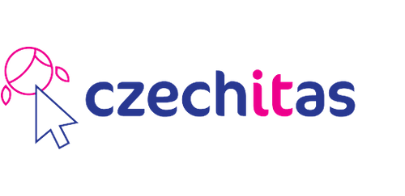

Autismus a jak dál
Projekt "Autismus a jak dál" je webová stránka, kde je popsané, co nám se synem pomáhá v rámci zvládání autismu. A mohlo by to pomoci i dalším maminkám, které stojí na začátku a nevědí čím začít.